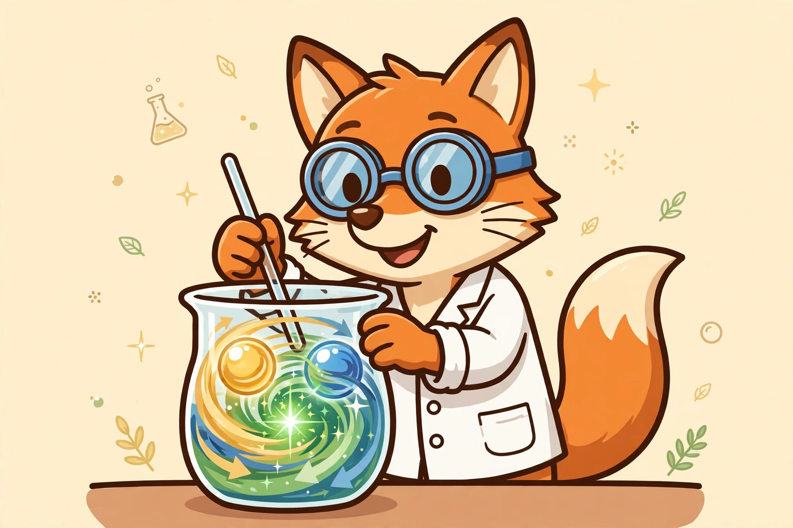

Mascot: Mixie the fox chemist. Theme: The Forge District.
The Forge District is a workshop town of chimneys, beakers, and brass. Every street is a workbench; every workshop forges new minds from two parents. Mixie keeps the forge log, and every hybrid leaves with a name, a mentality, and a stamp.
These tools run entirely on this page. They make names, scores, and picks — they never write a real record and never check the web.
Type two parent names. The blender joins the first half of one with the second half of the other, and gives a forge score. It makes names only — it never forges a real hybrid.
+
Designs and printables only. Free, downloadable, usable on the page. Nothing here is for sale.
A sturdy workshop apron printed with the forge rules and Mixie’s mark. Making: print the design on iron-on transfer paper, press onto a plain apron, and wear it at the bench.
A printable set of cards, one per hybrid, with name, parents, and mentality. Making: print double-sided on card, cut along the guides, and trade them.
A lined notebook with forge-log pages for recording blends. Making: print the pages, fold into a booklet, and staple the spine.
Fun: the Hybrid of the Day is the first hybrid in the forge log, JAH-MIX-000001, DeteIS — born of the Deterministic Engine and J.A.R.V.I.S. Fun only, not a new record.
Public data · Signature data · Question-and-answer website · Subject home · Accessible version
Generated 2026-11-21, America/New_York, from the live manifest and this subject’s own site files.